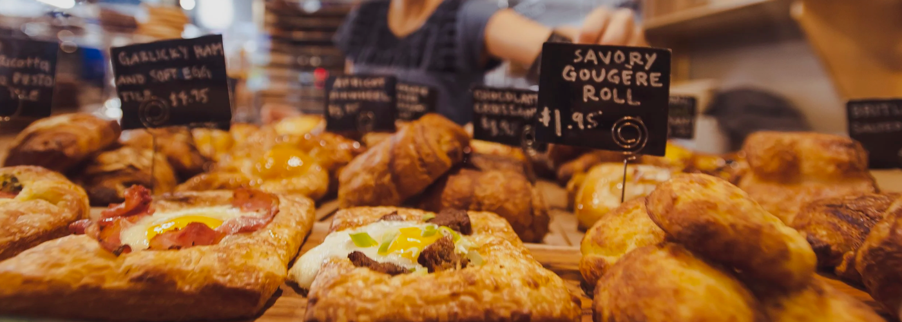

About Us:
Justine Laderer is the owner and head baker of our neighborhood bakery. She was the one that started our mission of treating our customers as our neighbors, which for us means treating you to the very best. It is why we pour our heart into everything we do. It is why pastries to use are not just a product, they are our passion.
We do it all to bring a smile to your face, because we believe the world needs more moments of joy. And there is no better place to find it than a place that feels just like home. Where you can share good conversation over an even better bite, and where the community comes together, and life is richer for it.
Warm Oven Delights is a bakery business that aims to help its community through helping folks create memories. It is a small business owned by a family that aim to serve up comforting classic dishes and baked goods that taste like home.

Warm Oven Delights contact information:
Address: IMED 1316, Kingwood, TX
Phone: 111-222-3344
Email: jladerer@my.lonestar.edu